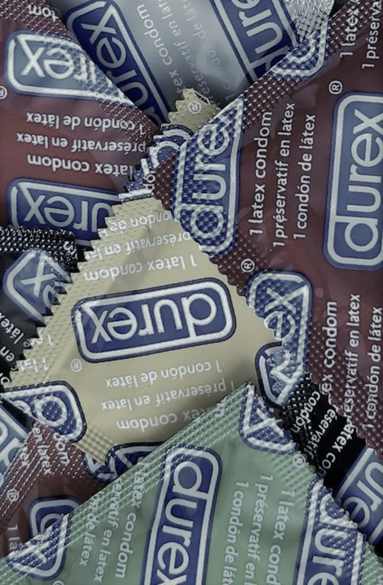

A SIDA NON SE TRANSMITE
- Acariñándose, tocándose. abrazándose, maturbándose, bicándose ou dándose masaxes.
- Mirando, conversando, compartindo momentos agradables, expresando sentimentos ou fantaseando.
- A través das picaduras de mosquitos, dentadas ou rabuñaduras de animais.
- Compartindo vasos,cubertos, panos de papel, pratos ou otros utensilios de cocina.
- Compartindo alimentos ou auga.
- Utilizando as mesmas duchas e servizos.
- Cos contactos da vida cotiá.
- Compartindo o lugar de estudo, traballo ou vivenda.
- Compartindo pezas de vestir.
- Nas piscinas e ximnasios.
- Nas relacións sexuais con penetración utilizando métodos de prevención.
LEMBRA NAS TÚAS RELACIÓNS
QUE DEBEMOS SABER DAS ITS
| INFECCIÓNS | SÍNTOMAS |
|---|---|
| CLAMIDIA | Case ningún en mulleres; ardor, dor e secreción amarelada nos homes. |
| LADILLAS | Comezón e picor forte. |
| HERPES | Úlceras/chagas na área xenital que producen dor e picores arredor dos xenitais. |
| CONDILOMAS | Verrugas avultadas na rexion xenital, aparecen entre un e tres meses despois da infección e poden producir, sobre todo nas mulleres, proído. |
| GONORREA | Afecta sobre todo a uretra, colo uterino, ano e farinxe. Inflamación da uretra,con secreción de pus, proído e dor a ouriñar. |
| HEPATITE B | Pel amarelada, fatiga, malestar, dor nas articulacións, músculos, cabeza. Tamén pode non dar síntomas. |
| INFECCIÓNS | SÍNTOMAS |
|---|---|
| MOLLUSCUM | Pequenas verrugas arredor da rexión anal ou xenital. |
| ENF.INFLAMATORIA | Dor na rexión xenital ou pélvica. |
| SARNA | Manchiñas vermellas en liña con proído ou irritación cada vez máis intenso. |
| SÍFILE | Chaga na pel sen dor, sarabullo ou úlceras xenitais. Secreción purulenta. |
| INFECCIÓNS VAX. | Secreción pestilente e de cores raros. |
| MONILIASE | Comezón, secreción ou irritación na área xenital, na boca ou na gorxa |
LEMBRA!
- Un fluxo de cheiro, dor e cantidade anormal é indicativo de ITS.
- As ITS non sempre presentan síntomas.
- Á menor dúbida de risco acudir ao médico.